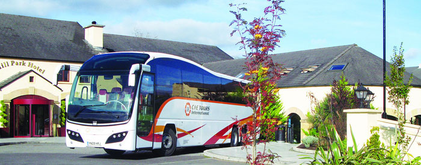

About us
Family Holidays Ireland provide families and travellers the highest quality holidays to Ireland and we continue to improve our tours and our services. Whether is it a family holiday to explore the history, culture, music of Ireland or just a relaxing time to enjoy the historic sites, the outdoor activities, the many festivals and celebrations FAMILY HOLIDAYS IRELAND has the ideal tour for you and your family. Over the years we have built up an enviable reputation for security and reliability with satisfied clients throughout the world. We set our own high standards for delivering excellent holidays with state-of-the-art luxury coaches; prompt and pleasant customer service; the best hotels; and carefully chosen visits and entertainment. We have a wide selection of tours to offer you and we are very pleased to invite you to IRELAND OF THE WELCOMES. FAMILY HOLIDAYS IRELAND coach tours are fully inclusive with no optional extras to purchase at your destination. You pay one price and we insist that our tour directors focus solely on your enjoyment. Once you pay the deposit, we guarantee our land tour prices. If you prefer to travel independently, we offer self-drive and chauffeur-drive programs for Ireland with a wide range of hotel accommodation, which can be booked in advance, as well as popular B & Bs. Whichever way you like to travel, choose one of our fine holidays from our website and enjoy the greatest travel experience ever!
What makes FAMILY HOLIDAYS IRELAND Tours unique
all the little extras we include
1. SIGHTSEEING VISITSFAMILY HOLIDAYS IRELAND includes a variety of attractions on every tour for an interesting travel experience. Check each tour itinerary to see exactly which places are featured. Admission costs are included in the tour price so that you don't waste time paying as you enter each attraction.
2. GUARANTEED DEPARTURES & PRICESWe guarantee most of our land tour departures which are updated daily on our website. We guarantee land tour costs will not increase, once you have paid your tour deposit, to protect you against international currency fluctuations.
3. GROUP AIRPORT TRANSFERSAs a newcomer to an airport, it's great to have someone meet you. We include complimentary group transfers on the starting and ending date of tours at times specified on each itinerary. If you arrive or depart later than our tour dates, you may purchase a transfer from us.
4. TRAVEL DOCUMENTSOn arrival FAMILY HOLIDAYS IRELAND will supply coach tour clients with tour vouchers, maps, ticket wallets, destination information, rain poncho, carry-on backpack, phone cards, VAT tax card, luggage tags and a strap. Self-drive clients receive accommodation vouchers and listings, ticket wallets, luggage tags and a strap. Use the tags and strap on your baggage for easy identification throughout your holiday. All you need to supply is a valid passport and, if driving, a current drivers license.
5. LEISURE & SPA FACILITIESMost of the hotels we use offer wonderful leisure facilities and spas. When you travel on a coach tour, you will have some free time most days and may like to enjoy some relaxation and spa serenity! So be sure to pack a swimsuit and workout clothes.
6. HISTORY & GEOGRAPHYPeople who choose to travel with FAMILY HOLIDAYS IRELAND usually have an interest in the long history of the region and, as you tour around, you will visit a lot of ancient cities, churches and castles. All of our tour directors are well trained in the background information of the places and incorporate this history into their narratives in a manner that is fun and easy to digest. Similarly they are able to give you facts on the geography of the regions you travel through, giving you an insight into climate, farming, weather and other topics.
7. COACH TOURING & SIGHTSEEINGSome people think that on a FAMILY HOLIDAYS IRELAND coach tour, all you do is sit on the coach all day. Not true with FAMILY HOLIDAYS IRELAND! We have created balanced and varied days of sightseeing with plenty of stops for taking photos, shopping, lunch, snacks and bathrooms. You never travel for longer than two hours without getting off the coach.
See what you get on a FAMILY HOLIDAYS IRELAND coach tour
Luxury coach travel, daily sightseeing and a professional tour director
Speedy group check-in at hotels
All breakfasts and most dinners including special dinner/shows
Airport transfers and baggage handling
Prepaid hotels, meals and admissions help you control holiday costs
Comprehensive tour documents
Fully Escorted Coach Tours
SELECTION OF ITINERARIESTouring by coach is a holiday with a capital H! FAMILY HOLIDAYS IRELAND offers the widest range of itineraries. Depending on your available time and budget, you can choose an ideal tour. All of our programs are carefully planned to permit full enjoyment of your holiday.
LUXURY TOURING COACHESTravel in the height of comfort with FAMILY HOLIDAYS IRELAND tours and sit back and let an expert do the driving! Our state-of-the-art coaches feature panoramic windows for optimum viewing while reclining seats, individual climate controls and a public address system ensure your well-being.
Relax and travel in style aboard one of our state-of-the-art FAMILY HOLIDAYS IRELAND coaches

YOUR TOUR DIRECTORFAMILY HOLIDAYS IRELAND Tours could not exist without our great locally employed tour directors they are the envy of the travel industry. From the moment you land in Ireland, your tour director is there to welcome you, handle your luggage, drive you from place to place and give you a daily commentary. Tour directors make history and culture come alive and create a superb experience with daily doses of humour, information and assistance.
Hotels
YOUR HOTELSFAMILY HOLIDAYS IRELAND Tours uses three classes of hotels first class (3-star), superior first class (4-star) or deluxe (5-star) properties on all tours. First class hotels feature a dining room, lounge, bar and comfortable rooms with many facilities. Superior first class hotels offer the same amenities with higher standards and many have leisure and spa facilities. Deluxe hotels offer luxurious features and are often in unique settings. We choose hotels in central locations or scenic regions and we name the hotels we use on each tour. Our website contains photos and detailed descriptions of each property.
HOTEL ARRIVALSWhen you travel as a group you benefit from speedy check-ins. On arrival at a hotel your tour director will announce your room number and you just pick up the key at the front desk. On departure you pay for phone calls, drinks or other extras. As check-in time is from 1:00 to 3:00 pm, rooms may not be available when you get to the hotel early.
LIVE LIKE A QUEEN OR KINGFor a royal experience, choose one of our deluxe tours where you can stay in 5-star properties including Ashford Castle or Dromoland Castle. Many other tours stay in 4-star castle hotels such as Clontarf, Cabra or Kilronan Castle, giving you the experience for a more moderate cost. We feature Bunratty, Knappogue or Cardiff Castle Banquets on a number of tours and all itineraries visit plenty of castles throughout Ireland and Britain.
BAGGAGE HANDLINGOnce you meet your tour director, you don't have to handle your luggage! At every hotel your suitcase is delivered to your bedroom door and collected on departure. However, luggage is restricted to one suitcase and one piece of carry-on baggage per person.
Meals
BREAKFASTS & DINNERSEvery morning a full cooked breakfast is served in your hotel to get your day off to a good start. In hotels a table dhote dinner is served. This is a 4-course meal with 2 to 5 choices of appetizers, entrees and desserts followed by tea or coffee. Special requests for vegetarian or low fat meals should be made directly to the hotel and can be arranged easily. Usually you will have one or two free evenings in Dublin, Killarney, London or Edinburgh where you will find a wide range of restaurants. Lunch stops are at self-service restaurants so that you can choose what you like and save valuable time for sightseeing or in towns where you can find a friendly bar and choose pub grub, casual dishes of many kinds.
SPECIAL EVENINGSAll of our tours highlight a number of great evenings to enhance your holiday. These experiences enable you to sample local foods and enjoy special entertainment. Depending on the tour you choose, you may attend a fun banquet in historic places such as Bunratty, Knappogue. Then there are musical dinner/shows in Dublin, pub evenings in Killarney, or a ceilidh with great. These will add great enjoyment to your holiday, and remember, these features are included in the cost of your tour.